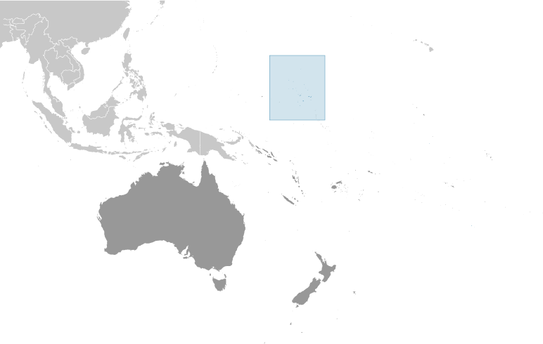
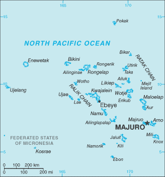
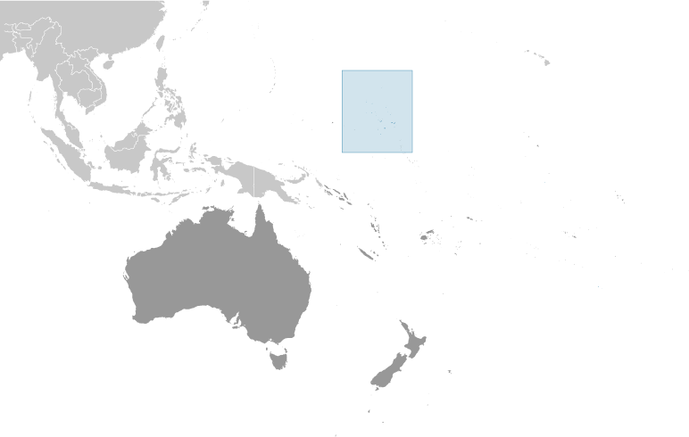
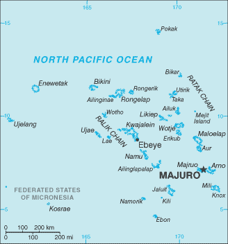

Australia-Oceania :: MARSHALL ISLANDS
Introduction :: MARSHALL ISLANDS
-
After almost four decades under US administration as the easternmost part of the UN Trust Territory of the Pacific Islands, the Marshall Islands attained independence in 1986 under a Compact of Free Association. Compensation claims continue as a result of US nuclear testing on some of the atolls between 1947 and 1962. The Marshall Islands hosts the US Army Kwajalein Atoll Reagan Missile Test Site, a key installation in the US missile defense network. Kwajalein also hosts one of four dedicated ground antennas (the others are on Ascension (Saint Helena, Ascension, and Tristan da Cunha), Diego Garcia (British Indian Ocean Territory), and at Cape Canaveral, Florida (US)) that assist in the operation of the Global Positioning System (GPS) navigation system.
Geography :: MARSHALL ISLANDS
-
Oceania, two archipelagic island chains of 29 atolls, each made up of many small islets, and five single islands in the North Pacific Ocean, about halfway between Hawaii and Australia9 00 N, 168 00 EOceaniatotal: 181 sq kmland: 181 sq kmwater: 0 sq kmnote: the archipelago includes 11,673 sq km of lagoon waters and encompasses the atolls of Bikini, Enewetak, Kwajalein, Majuro, Rongelap, and Utirikcountry comparison to the world: 217about the size of Washington, DC0 km370.4 kmterritorial sea: 12 nmcontiguous zone: 24 nmexclusive economic zone: 200 nmtropical; hot and humid; wet season May to November; islands border typhoon beltlow coral limestone and sand islandsmean elevation: 2 melevation extremes: lowest point: Pacific Ocean 0 mhighest point: East-central Airik Island, Maloelap Atoll 14 mcoconut products, marine products, deep seabed mineralsagricultural land: 50.7%arable land 7.8%; permanent crops 31.2%; permanent pasture 11.7%forest: 49.3%other: 0% (2011 est.)0 sq km (2012)most people live in urban clusters found on many of the country's islands; more than two-thirds of the population lives on the atolls of Majuro and Ebeyeinfrequent typhoonsinadequate supplies of potable water; pollution of Majuro lagoon from household waste and discharges from fishing vesselsparty to: Biodiversity, Climate Change, Climate Change-Kyoto Protocol, Desertification, Hazardous Wastes, Law of the Sea, Ozone Layer Protection, Ship Pollution, Wetlands, Whalingsigned, but not ratified: none of the selected agreementsthe islands of Bikini and Enewetak are former US nuclear test sites; Kwajalein atoll, famous as a World War II battleground, surrounds the world's largest lagoon and is used as a US missile test range; the island city of Ebeye is the second largest settlement in the Marshall Islands, after the capital of Majuro, and one of the most densely populated locations in the Pacific
People and Society :: MARSHALL ISLANDS
-
74,539 (July 2017 est.)country comparison to the world: 201noun: Marshallese (singular and plural)adjective: MarshalleseMarshallese 92.1%, mixed Marshallese 5.9%, other 2% (2006)Marshallese (official) 98.2%, other languages 1.8% (1999 census)note: English (official), widely spoken as a second languageProtestant 54.8%, Assembly of God 25.8%, Roman Catholic 8.4%, Bukot nan Jesus 2.8%, Mormon 2.1%, other Christian 3.6%, other 1%, none 1.5% (1999 census)0-14 years: 34.89% (male 13,261/female 12,743)15-24 years: 18% (male 6,820/female 6,594)25-54 years: 37.28% (male 14,147/female 13,642)55-64 years: 5.82% (male 2,189/female 2,148)65 years and over: 4.02% (male 1,475/female 1,520) (2017 est.)total: 22.9 yearsmale: 22.8 yearsfemale: 23 years (2017 est.)country comparison to the world: 1711.55% (2017 est.)country comparison to the world: 7424.4 births/1,000 population (2017 est.)country comparison to the world: 514.2 deaths/1,000 population (2017 est.)country comparison to the world: 208-4.7 migrant(s)/1,000 population (2017 est.)country comparison to the world: 188most people live in urban clusters found on many of the country's islands; more than two-thirds of the population lives on the atolls of Majuro and Ebeyeurban population: 73.2% of total population (2017)rate of urbanization: 1.07% annual rate of change (2015-20 est.)MAJURO (capital) 31,000 (2014)at birth: 1.05 male(s)/female0-14 years: 1.04 male(s)/female15-24 years: 1.03 male(s)/female25-54 years: 1.04 male(s)/female55-64 years: 1.04 male(s)/female65 years and over: 0.97 male(s)/femaletotal population: 1.04 male(s)/female (2016 est.)20.7 yearsnote: median age at first birth among women 25-29 (2007 est.)total: 19.3 deaths/1,000 live birthsmale: 21.8 deaths/1,000 live birthsfemale: 16.7 deaths/1,000 live births (2017 est.)country comparison to the world: 83total population: 73.4 yearsmale: 71.2 yearsfemale: 75.7 years (2017 est.)country comparison to the world: 1373.03 children born/woman (2017 est.)country comparison to the world: 5444.6% (2007)17.1% of GDP (2014)country comparison to the world: 20.46 physicians/1,000 population (2012)2.7 beds/1,000 population (2010)improved:urban: 93.5% of populationrural: 97.6% of populationtotal: 94.6% of populationunimproved:urban: 6.5% of populationrural: 2.4% of populationtotal: 5.4% of population (2015 est.)improved:urban: 84.5% of populationrural: 56.2% of populationtotal: 76.9% of populationunimproved:urban: 15.5% of populationrural: 43.8% of populationtotal: 23.1% of population (2015 est.)NANANAnote: active local transmission of Zika virus by Aedes species mosquitoes has been identified in this country (as of August 2016); it poses an important risk (a large number of cases possible) among US citizens if bitten by an infective mosquito; other less common ways to get Zika are through sex, via blood transfusion, or during pregnancy, in which the pregnant woman passes Zika virus to her fetus (2016)52.9% (2016)country comparison to the world: 4definition: age 15 and over can read and writetotal population: 98.3%male: 98.3%female: 98.2% (2011 est.)total: 11%male: 12.2%female: 8.7% (2010 est.)
Government :: MARSHALL ISLANDS
-
conventional long form: Republic of the Marshall Islandsconventional short form: Marshall Islandslocal long form: Republic of the Marshall Islandslocal short form: Marshall Islandsabbreviation: RMIformer: Trust Territory of the Pacific Islands, Marshall Islands Districtetymology: named after British Captain John MARSHALL, who charted many of the islands in 1788presidential republic in free association with the USname: Majuro; note - the capital is an atoll of 64 islands; governmental buildings are housed on three fused islands: Djarrit, Uliga, and Delapgeographic coordinates: 7 06 N, 171 23 Etime difference: UTC+12 (17 hours ahead of Washington, DC, during Standard Time)24 municipalities; Ailinglaplap, Ailuk, Arno, Aur, Bikini & Kili, Ebon, Enewetak & Ujelang, Jabat, Jaluit, Kwajalein, Lae, Lib, Likiep, Majuro, Maloelap, Mejit, Mili, Namdrik, Namu, Rongelap, Ujae, Utrik, Wotho, Wotje21 October 1986 (from the US-administered UN trusteeship)Constitution Day, 1 May (1979)effective 1 May 1979; amended several times, last in 1995 (2016)mixed legal system of US and English common law, customary law, and local statutesaccepts compulsory ICJ jurisdiction with reservations; accepts ICCt jurisdictioncitizenship by birth: nocitizenship by descent only: at least one parent must be a citizen of the Marshall Islandsdual citizenship recognized: noresidency requirement for naturalization: 5 years18 years of age; universalchief of state: President Hilda C. HEINE (since 28 January 2016); note - the president is both chief of state and head of governmenthead of government: President Hilda C. HEINE (since 28 January 2016)cabinet: Cabinet nominated by the president from among members of the Nitijela, appointed by Nitijela speakerelections/appointments: president indirectly elected by the Nitijela from among its members for a 4-year term (no term limits); election last held on 27 January 2016 (next to be held in 2020)election results: Hilda C. HEINE elected president on 27 January 2016; Parliament vote - Hilda C. HEINE 24, she was the only candidatenote: Hilda C. HEINE is the first female elected head of state of any Pacific island nationdescription: bicameral legislature consists of the Council of Iroij (12 seats; consists of tribal chiefs chosen by holders of the chieftainship among the constituent islands) and the National Parliament or Nitijela (33 seats; members directly elected by simple majority vote to serve 4-year terms); note - the Council of Iroij advises the Presidential Cabinet and reviews legislation affecting customary law or any traditional practice)elections: last held on 16 November 2015 (next to be held by November 2019)election results: percent of vote by party - NA; seats by party - independent 33highest court(s): Supreme Court (consists of the chief justice and other judges as prescribed by law)judge selection and term of office: judges appointed by the Cabinet on the recommendation of the Judicial Service Commission and upon the approval of the Nitijela; judges appointed until retirement, normally at age 72subordinate courts: High Court; District Courts; Traditional Rights Court; Community Courtstraditionally there have been no formally organized political parties; what has existed more closely resembles factions or interest groups because they do not have party headquarters, formal platforms, or party structures; the following two "groupings" have competed in legislative balloting in recent years - Aelon Kein Ad Party [Michael KABUA] and United Democratic Party or UDP [Litokwa TOMEING]NAACP, ADB, AOSIS, FAO, G-77, IAEA, IBRD, ICAO, ICCt, IDA, IFAD, IFC, ILO, IMF, IMO, IMSO, Interpol, IOC, IOM, ITU, OPCW, PIF, Sparteca, SPC, UN, UNCTAD, UNESCO, WHOchief of mission: Ambassador Gerald M. ZACKIOS (since 16 September 2016)chancery: 2433 Massachusetts Avenue NW, 1st Floor, Washington, DC 20008telephone: [1] (202) 234-5414FAX: [1] (202) 232-3236consulate(s) general: Honolulu, Springdale (AR)consulate(s): Agana (Guam)chief of mission: Ambassador Karen Brevard STEWART (since 25July 2016)embassy: Oceanside, Mejen Weto, Long Island, Majuromailing address: P. O. Box 1379, Majuro, Republic of the Marshall Islands 96960-1379telephone: [692] 247-4011FAX: [692] 247-4012blue with two stripes radiating from the lower hoist-side corner - orange (top) and white; a white star with four large rays and 20 small rays appears on the hoist side above the two stripes; blue represents the Pacific Ocean, the orange stripe signifies the Ralik Chain or sunset and courage, while the white stripe signifies the Ratak Chain or sunrise and peace; the star symbolizes the cross of Christianity, each of the 24 rays designates one of the electoral districts in the country and the four larger rays highlight the principal cultural centers of Majuro, Jaluit, Wotje, and Ebeye; the rising diagonal band can also be interpreted as representing the equator, with the star showing the archipelago's position just to the northa 24-rayed star; national colors: blue, white, orangename: "Forever Marshall Islands"lyrics/music: Amata KABUAnote: adopted 1981
Economy :: MARSHALL ISLANDS
-
US assistance and lease payments for the use of Kwajalein Atoll as a US military base are the mainstay of this small island country. Agricultural production, primarily subsistence, is concentrated on small farms; the most important commercial crops are coconuts and breadfruit. Industry is limited to handicrafts, tuna processing, and copra. Tourism holds some potential. The islands and atolls have few natural resources, and imports exceed exports.The Marshall Islands received roughly $1 billion in aid from the US during the period 1986-2001 under the original Compact of Free Association (Compact). In 2002 and 2003, the US and the Marshall Islands renegotiated the Compact's financial package for a 20-year period, 2004 to 2024. Under the amended Compact, the Marshall Islands will receive roughly $1.5 billion in direct US assistance. Under the amended Compact, the US and Marshall Islands are also jointly funding a Trust Fund for the people of the Marshall Islands that will provide an income stream beyond 2024, when direct Compact aid ends.$182 million (2016 est.)$177 million (2015 est.)$171 million (2014 est.)note: data are in 2016 dollarscountry comparison to the world: 221$194 million (2016 est.)2% (2016 est.)1.9% (2015 est.)-0.4% (2014 est.)country comparison to the world: 143$3,400 (2016 est.)$3,300 (2015 est.)$3,200 (2014 est.)note: data are in 2016 dollarscountry comparison to the world: 188agriculture: 4.4%industry: 9.9%services: 85.7% (2013 est.)coconuts, tomatoes, melons, taro, breadfruit, fruits; pigs, chickenscopra, tuna processing, tourism, craft items (from seashells, wood, and pearls)NA%10,670 (2013 est.)country comparison to the world: 218agriculture: 11%industry: 16.3%services: 72.7% (2011 est.)36% (2006 est.)30.9% (2000 est.)country comparison to the world: 209NA%lowest 10%: NA%highest 10%: NA%revenues: $116.7 millionexpenditures: $113.9 million (2013 est.)63.8% of GDP (2013 est.)country comparison to the world: 71.5% of GDP (2013 est.)country comparison to the world: 1632.2% of GDP (2016 est.)34.7% of GDP (2015 est.)country comparison to the world: 1531 October - 30 September-1.5% (2016 est.)-2.2% (2015 est.)country comparison to the world: 83$17 million (2016 est.)$26.62 million (2015 est.)country comparison to the world: 56$53.7 million (2013 est.)$47.21 million (2015 est.)country comparison to the world: 202copra cake, coconut oil, handicrafts, fish$133.7 million (2013 est.)$120.9 million (2015 est.)country comparison to the world: 213foodstuffs, machinery and equipment, fuels, beverages, tobacco$97.96 million (2013 est.)$87 million (2008 est.)country comparison to the world: 194the US dollar is used
Energy :: MARSHALL ISLANDS
-
population without electricity: 30,084electrification - total population: 59%electrification - urban areas: 65%electrification - rural areas: 45% (2012)620 million kWh (2015 est.)country comparison to the world: 164576.6 million kWh (2015 est.)country comparison to the world: 1710 kWh (2016 est.)country comparison to the world: 1870 kWh (2016 est.)country comparison to the world: 19152,000 kW (2015 est.)country comparison to the world: 19080.8% of total installed capacity (2015 est.)country comparison to the world: 850% of total installed capacity (2015 est.)country comparison to the world: 17119.2% of total installed capacity (2015 est.)country comparison to the world: 910% of total installed capacity (2015 est.)country comparison to the world: 2020 bbl/day (2016 est.)country comparison to the world: 1850 bbl/day (2014 est.)country comparison to the world: 1800 bbl/day (2014 est.)country comparison to the world: 1800 bbl (1 January 2017 es)country comparison to the world: 1830 bbl/day (2014 est.)country comparison to the world: 1892,000 bbl/day (2015 est.)country comparison to the world: 1940 bbl/day (2014 est.)country comparison to the world: 1912,060 bbl/day (2014 est.)country comparison to the world: 188300,000 Mt (2013 est.)country comparison to the world: 195
Communications :: MARSHALL ISLANDS
-
total subscriptions: 2,361subscriptions per 100 inhabitants: 3 (July 2016 est.)country comparison to the world: 213total: 16,000subscriptions per 100 inhabitants: 21 (July 2016 est.)country comparison to the world: 212general assessment: some telecom infrastructure improvements made in recent years; modern services include telex, cellular, Internet, international calling, caller ID, and leased data circuitsdomestic: Majuro Atoll and Ebeye and Kwajalein islands have regular, seven-digit, direct-dial telephones; other islands interconnected by high frequency radiotelephone (used mostly for government purposes) and mini-satellite telephonesinternational: country code - 692; satellite earth stations - 2 Intelsat (Pacific Ocean); US Government satellite communications system on Kwajalein (2016)no TV broadcast station; a cable network is available on Majuro with programming via videotape replay and satellite relays; 4 radio broadcast stations; American Armed Forces Radio and Television Service (AFRTS) provides satellite radio and television service to Kwajalein Atoll (2009).mhtotal: 21,857percent of population: 29.8% (July 2016 est.)country comparison to the world: 210
Transportation :: MARSHALL ISLANDS
-
number of registered air carriers: 1inventory of registered aircraft operated by air carriers: 1annual passenger traffic on registered air carriers: 86,868annual freight traffic on registered air carriers: 0 mt-km (2015)V7 (2016)15 (2013)country comparison to the world: 146total: 41,524 to 2,437 m: 3914 to 1,523 m: 1 (2017)total: 11914 to 1,523 m: 10under 914 m: 1 (2013)total: 2,028 kmpaved: 75 kmnote: roads are mostly unimproved (2007)country comparison to the world: 175total: 1,593by type: barge carrier 1, bulk carrier 524, cargo 65, carrier 1, chemical tanker 351, container 226, liquefied gas 88, passenger 7, passenger/cargo 1, petroleum tanker 297, refrigerated cargo 13, roll on/roll off 9, vehicle carrier 10foreign-owned: 1,465 (Belgium 1, Bermuda 35, Brazil 1, Canada 8, China 14, Croatia 12, Cyprus 40, Denmark 7, Egypt 1, France 7, Germany 248, Greece 408, Hong Kong 3, India 10, Indonesia 1, Iraq 2, Ireland 6, Italy 1, Japan 59, Jersey 11, Kuwait 2, Latvia 19, Malaysia 11, Mexico 2, Monaco 30, Netherlands 21, Norway 75, Pakistan 1, Qatar 29, Romania 2, Russia 5, Singapore 30, Slovenia 6, South Korea 41, Sweden 1, Switzerland 12, Taiwan 8, Turkey 70, UAE 12, UK 12, Ukraine 1, US 200) (2010)country comparison to the world: 7major seaport(s): Enitwetak Island, Kwajalein, Majuro
Military and Security :: MARSHALL ISLANDS
-
no regular military forces; Marshall Islands Police (2012)defense is the responsibility of the US
Transnational Issues :: MARSHALL ISLANDS
-
claims US territory of Wake Islandcurrent situation: The Marshall Islands is a source and destination country for Marshallese women and girls and women from East Asia subjected to sex trafficking; Marshallese and foreign women are forced into prostitution in businesses frequented by crew members of fishing and transshipping vessels that dock in Majuro; some Chinese women are recruited to the Marshall Islands with promises of legitimate work and are subsequently forced into prostitutiontier rating: Tier 3 – The Marshall Islands do not fully comply with the minimum standards for the elimination of trafficking and is not making significant efforts to do so; the government made no anti-trafficking law enforcement efforts, including developing a written plan to combat trafficking; no new trafficking investigations were opened in 2014, and no prosecutions or convictions were made for the fourth consecutive year; no efforts were made to identify trafficking victims, especially among women in prostitution or men working on foreign fishing vessels in Marshallese waters, and no attempt was made to ensure their access to protective services; limited awareness-raising events were conducted by an international organization (2015)